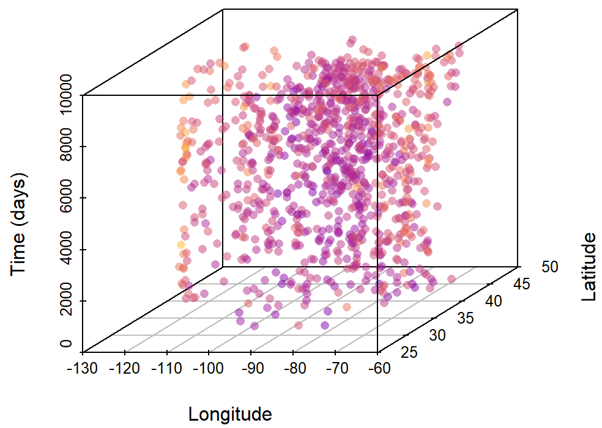

# load R packages
library(tidyverse)
library(sf)
# Load ZIP code 7geographic data (downloaded from: https://www.kaggle.com/datasets/jedwible/uszipcodes-20231227)
zips <- "./data/USZipsWithLatLon_20231227.csv" %>%
read_csv(show_col_types = F) %>%
# select variables of interest
select(`postal code`, latitude, longitude) %>%
# add coordinates in meters (NAD83 / Conus Albers, EPSG:5070)
st_as_sf(coords = c('longitude','latitude'), remove = F, crs = 'WGS84') %>%
st_transform(crs = 5070) %>%
# transform back to dataframe object
as_Spatial() %>%
as.data.frame() %>%
rename(x=coords.x1, y=coords.x2)
# Load Zillow data (downloaded from: https://www.zillow.com/research/data)
zillow_dat <- './data/Zip_zhvi_uc_sfrcondo_tier_0.33_0.67_sm_sa_month.csv' %>%
read_csv(show_col_types = F)
# Merge Zillow data to geolocation data & tidy the data
zillow_dat <- zillow_dat %>%
# merge coordinates to ZIP data
left_join(zips, by = c('RegionName' = 'postal.code')) %>%
select(RegionName, longitude, latitude, x, y, everything() )%>%
# gather price and time
gather('rawdate','price', 14:ncol(.), na.rm = T) %>%
arrange(RegionName) %>%
# extract date and calculate time (days) elapsed since baseline date (1st Jan 2000)
mutate(rawdate = as.Date(rawdate)) %>%
mutate(time = as.numeric(rawdate - as.Date('2000-01-01'))) %>%
group_by(RegionName) %>%
mutate(time_span_years = max(time)-min(time), .after= RegionName) %>%
ungroup()Reconstructing 25 years of house price dynamics across the United States without time series data
machine learning
GIS
A ML-driven geostatistical interpolation to predict 25-year price changes of houses across the United States without temporal replication
1. Background
Time series data can often be gappy in space and time. Here, I illustrate a spatiotemporal machine learning (ML) interpolation exercise showing that it is possible to predict temporal changes at any point in time for a variable of interest from sparse geographic data (i.e., data without temporal replication at a site). This approach works when the variable of interest is spatially and temporally autocorrelated (Tobler, 1970), so that the space-time cube (Mahecha et al., 2020) can be filled using ML models trained on data with just one observation at each site that account for the complex interaction between space, time, and area (Keil & Chase, 2022).
As an ecologist by training, we recently utilized this approach to study species richness dynamics (Midolo et al., 2025). Here, I illustrate how this approach can be applied very well also in other contexts, such as the changes in prices of houses arranged across postal codes of the United States. Specifically, I utilized temporal time series of house prices across 26,318 zip addresses across the U.S. available from Zillow Housing Data. I used smoothed, seasonally adjusted, Zillow Home Value Index (ZHVI) prices for all homes tipes (SFR and Condo/Co-op). The time serie cover 25 years, ranging from 31 December 2000 to 31 March 2025.
2. Data preparation
As the Zillow dataset does not contain the longitude and latitude of ZIP code addresses, I utilized an external source containing geographic information for each ZIP code, available on kaggle.com. This dataset offers geographic coordinates in WGS84. I transformed these coordinates (x, y) into meters (using EPSG:5070 - NAD83/Conus Albers projection) so that we can use this information for better statistical interpolation. Concerning time, I standardized it so that it is expressed in days elapsed from the 1st of January 2000.
The data comprehend time series for each ZIP code in the U.S. For example, here is how the temporal trend of prices looks in Beverly Hills (Los Angeles) - a region known for very high property values:
The time series covers each of these locations (however, note that not all ZIP codes have data across the entire 25 years period):
3. Model training
I will employ Random Forests (Breiman, 2001) using the ‘ranger’ engine (Wright & Ziegler, 2017) to model the dependence of price to geographic coordiantes (x, y) and time. \[ price \sim x + y + time \] Given repeated observations at each U.S. ZIP code, I tested the robustness of our temporal price interpolation by training our model on sites without replication in time. To this end, I generated a static dataset by randomly sampling one price observation at a random time for each U.S. ZIP code.
# Generate random static dataset
set.seed(123)
d_static <- zillow_dat %>%
group_by(RegionName) %>%
sample_n(1) %>%
ungroup()The space-time cube representation of our data is visualized below (showing 1000 observations only for clarity), with colored points being our response variable to be interpolated in time.

I tuned and trained our model using tidymodels:
library(tidymodels)
library(future)
# Prepare data for modeling and split train and test dataset
set.seed(234)
dat_split <-
d_static %>%
## select variables for modeling
select(RegionName, price, x, y, time) %>%
## split the data
initial_split(prop = 4/5, strata = price)
# Subset training set
dat_train <- training(dat_split)
# Get CV folds
set.seed(345)
cv_random_folds <- vfold_cv(dat_train, v = 10, repeats = 1, strata = price)
# Define recipe
rec <- recipe(price ~ x + y + time, data = dat_train) %>%
step_normalize(all_numeric_predictors())
# Define model
spec <- rand_forest(
trees = 500,
min_n = tune(),
mtry = tune()
) %>%
set_mode('regression') %>%
set_engine('ranger', importance = 'impurity', seed = 1975)
# Define workflow
wflow <- workflow() %>%
add_model(spec) %>%
add_recipe(rec)
wflow
# Define tune grid
grd_tune <- expand.grid(
min_n = c(2,5,10,15,20),
mtry = c(2:3)) %>%
as_tibble()
glimpse(grd_tune)
# Perform tuning
set.seed(456)
plan(multisession, workers = 4)
st = Sys.time()
tune_res <- tune_grid(
object = wflow,
resamples = cv_random_folds,
grid = grd_tune,
metrics = metric_set(rmse, rsq)
)
print(Sys.time()-st)
plan(sequential)
# Export tuning results
tune_res %>%
write_rds('./data/models/RF.tune_res.rds')
# Select the best performing sets of parameters
tune_best <- select_best(tune_res, metric = 'rmse')
tune_best
# Finalize workflow, fit on training data and test on testing data
lfit <- wflow %>%
finalize_workflow(tune_best) %>%
last_fit(dat_split)
# Export last fit
lfit %>%
write_rds('./data/models/RF.last_fit.rds')The model showed a relatively good predictive power, with an \(R^{2}\) of 0.66:
collect_metrics(lfit)[,c(1,3)]# A tibble: 2 × 2
.metric .estimate
<chr> <dbl>
1 rmse 119754.
2 rsq 0.661Spatial components, particularly longitude (as house prices are highest on both the West and East coasts), and the temporal component were key predictors, as seen in the variable importance:
4. Model validation
To validate the interpolation, I checked how well our model (trained solely on data without temporal replication) predicted house price changes compared to observed changes in real time series data. This involved randomly calculating log response ratios (lnRR) of price changes between two time points for each individual time series using both observed and predicted prices (repeated here 30 times).
# Predict the model over the entire dataset
st=Sys.time()
preds <- lfit %>%
extract_workflow() %>%
predict(zillow_dat)
Sys.time()-st# Merge price predictions to the data
zillow_dat$.pred <- preds$.predset.seed(567)
res_rsq <- list()
i_iter = 1:30
i_save = sample(i_iter, 1) # save one random iteration for plotting
for (i in i_iter) {
di <- zillow_dat %>%
group_by(RegionName) %>%
sample_n(2) %>%
arrange(RegionName, time) %>%
select(RegionName, time, .pred, price) %>%
mutate(time_period = ifelse(time == max(time), 'T2', 'T1')) %>%
ungroup()
di_change_obs <- di %>%
select(-.pred,-time) %>%
spread(time_period, price) %>%
mutate(lnRR_obs = log(T2/T1))
di_change_prd <- di %>%
select(-price,-time) %>%
spread(time_period, .pred) %>%
mutate(lnRR_prd = log(T2/T1))
di_change_join <- left_join(
di_change_obs %>% select(RegionName, lnRR_obs),
di_change_prd %>% select(RegionName, lnRR_prd),
'RegionName'
)
if(i == i_save) {
res_dat_example <- di_change_join
}
res_rsq[[i]] <- rsq(di_change_join, lnRR_obs, lnRR_prd)
if(i %% 10 == 0){
message('iter: ', i,'...done')
}
}
res_rsq <- res_rsq %>%
bind_rows(.id='iter')#Average Rsq results
paste0('rsq (pred. vs. obs. lnRR) = ', round(mean(res_rsq$.estimate), 2))[1] "rsq (pred. vs. obs. lnRR) = 0.62"Our model predicted with good accuracy changes of prices over time (\(R^{2}\) = 0.62). This means, indeed, that we can robustly predict temporal price series without temporal replication.

5. Limitations and Applications
Of course, we still have 38% of unexplained variation in price changes, which means we cannot reconstruct site-specific trends with absolute certainty. While our approach is capable of predicting the average direction of changes across various regions (=ZIP codes) with relatively good estimation, price estimations at each region can still be very imprecise (especially in those ZIP codes/cities with temporal trends that differ substantially from nearby neighborhoods, breaking the spatial dependency needed for predictions), as you can see in some examples in the graphs below. This cautions against using this method for individual site time series forecasting, especially when the goal is to obtain highly precise estimates. Nonetheless, I argue that this approach is extremely powerful for reconstructing overall temporal changes across many sparse observations, especially in scenarios where we have no alternative but to use data without temporal replication.
References
Breiman L., Random forests. Machine Learning 45, 5–32 (2001).
Keil, P. & Chase, J. Interpolation of temporal biodiversity change, loss, and gain across scales: a machine learning approach. EcoEvoRxiv (2022)
Mahecha, M. D. et al. Earth system data cubes unravel global multivariate dynamics. Earth System Dynamics 11, 201–234 (2020)
Midolo, G. et al. Six decades of losses and gains in alpha diversity of European plant communities. Ecology Letters, 28(11) https://doi.org/10.1111/ele.70248 (2025).
Tobler, W. R. A Computer Movie Simulating Urban Growth in the Detroit Region. Economic Geography 46, 234 (1970)
Wright, M. N. & Ziegler, A. ranger: A Fast Implementation of Random Forests for High Dimensional Data in C++ and R. Journal of Statistical Software 77 (2017).